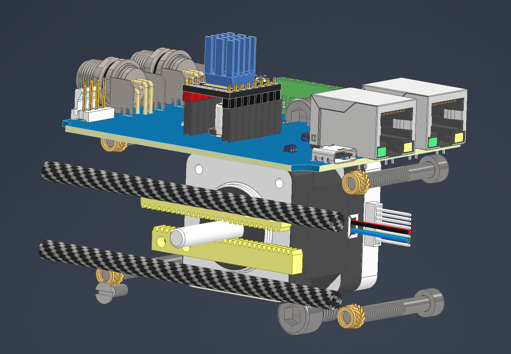
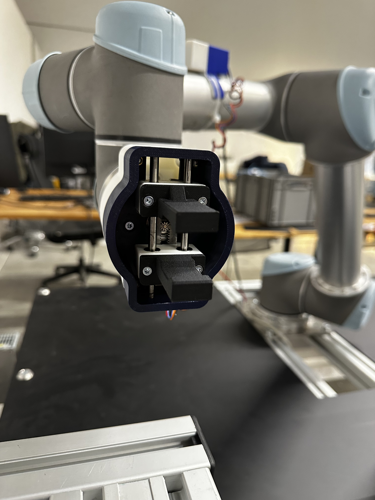

Compact Parallel Gripper End-Effector
Development of a compact mechatronic parallel gripper for robotic testing applications. The project focused on achieving a required opening range within a limited end-effector volume while integrating the mechanism, bearings, fittings, electronics, wiring, and mounting interface into one compact assembly.

Overview
This project involved the development of a small parallel gripper end-effector for robotic testing. The required opening distance was defined by the application, but the available volume for the complete mechanism was very limited.
The main challenge was to design a compact mechanism that could achieve the required stroke while also fitting the actuator, guide elements, bearings, electronics, wiring, fittings, and mounting interface into one usable end-effector package.
My contribution
I was responsible for the mechanical development and integration of the gripper. The work included mechanism layout, CAD design, fitting and bearing selection, electronics packaging, assembly, testing, and iteration until the end-effector worked as a compact mechatronic unit.
- Designed the compact parallel gripper mechanism around the required opening range.
- Selected and integrated bearings, guide rods, fittings, and mechanical interfaces.
- Integrated electronics and wiring into the limited available end-effector volume.
- Designed the housing and mounting interface for robotic testing.
- Assembled, tested, and iterated the gripper based on practical integration constraints.
- Deployed the gripper in in-house robotic testing setups.
Engineering challenges
Compact mechanism design
- The gripper needed to achieve a defined opening stroke within a very small package.
- The mechanism had to remain stiff and guided despite the limited available space.
- Bearings, guide rods, fasteners, and moving components had to be arranged without collisions.
- The design needed to be printable, assembled, and serviced without unnecessary complexity.
Mechatronic integration
- The electronics had to fit inside the same compact volume as the mechanical system.
- Wiring, connectors, and fittings had to be routed without interfering with moving parts.
- The end-effector needed to mount cleanly to a robot while keeping the gripper accessible.
- The final assembly had to work as a complete mechatronic unit, not only as a mechanical concept.
Design process
The required opening range was fixed by the application. This defined the mechanism target and created the central packaging challenge for the design.
Designed the moving finger layout, guide elements, bearing arrangement, and actuation concept to achieve the required parallel motion inside the available space.
Packaged the electronics, wiring, connectors, fittings, and routing paths around the mechanical system while avoiding interference with moving components.
Developed the outer housing and mounting interface so the gripper could be installed on a robot and used as a practical in-house testing end-effector.
Built and tested the gripper, then iterated details such as clearances, assembly access, cable routing, and component placement to improve reliability and usability.
Design and integration


Functional testing
Functional test of the compact parallel gripper. The test was used to validate the opening motion, mechanical clearances, actuation behavior, and integration of the end-effector as a complete mechatronic assembly.
Result
The result was a compact parallel gripper end-effector that combined mechanism design, electronics packaging, fittings, wiring, and robot mounting into one functional mechatronic unit. The gripper was used in in-house robotic testing and provided practical experience in compact end-effector integration.
This project was especially valuable because it required solving mechanical packaging and mechatronic integration together, rather than treating electronics, actuation, and mechanical design as separate tasks.